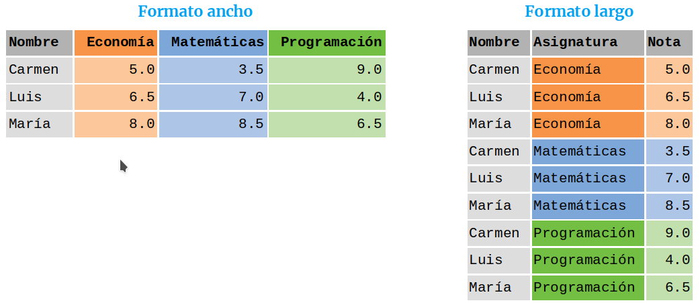

Cualquier análisis de datos comienza con la carga de datos en un data frame. Normalmente los datos brutos deben limpiarse y prepararse para su análisis. Este proceso se conoce como preprocesamiento de datos y suele incluir las siguientes tareas:
Reestructuración del data frame.
Selección de las variables (columnas) de interés.
Filtrado de los casos (filas) de interés.
Cálculo de nuevas variables a partir de las existentes.
Ordenación de datos.
Agrupación de datos.
Tratamiento de datos no disponibles (NA, NaN).
La colección de paquetes tidyverse
tidyverse es una colección de paquetes para la Ciencia de Datos. Incluye los siguientes paquetes:
tibble: Define la estructura de datos tibble que es una versión mejorada de los data frames.
readr: Proporciona funciones para la lectura y escritura de tablas de datos en formato plano csv y tsv.
tidyr: Proporciona funciones para la limpieza y preparación de los datos de manera consistente.
dplyr: Proporciona una gramática de funciones para la manipulación de datos y las tareas más habituales de preprocesamiento.
stringr: Proporciona funciones especializadas en la manipulación de cadenas.
forcats: Proporciona funciones especializadas en la manipulación de factores.
purrr: Proporciona funciones para la programación funcional que mejoran las ya existentes en R.
ggplot2: Proporciona una gramática de funciones para la realización de gráficos.
Estos paquetes están diseñados bajo una misma filosofía por lo interactúan y se complementan a la perfección.
Tibbles
El paquete tibble define la estructura de datos tibble que es similiar a los data frames, pero optimizada, ya que realiza una carga en memoria y evaluación perezosa, lo que hace más eficiente el manejo de grandes volúmenes de datos estructurados en forma de tabla. Los tibbles, además, suelen dar más información sobre el contenido y la estructura de los datos, así como de incoherencias en los datos.
Aunque los paquetes de tidyverse trabajan perfectamente con data frames, están optimizados para trabajar con tibbles.
Para convertir un data frame en un tibble se utiliza la función
as_tibble(df): Convierte el data frame df en un tibble.
Ejemplo 1
library(tibble)df <-data.frame(asignatura =c("Matemáticas", "Física", "Economía"), nota =c(8.5, 7, 4.5))df
asignatura nota
1 Matemáticas 8.5
2 Física 7.0
3 Economía 4.5
as_tibble(df)
# A tibble: 3 × 2
asignatura nota
<chr> <dbl>
1 Matemáticas 8.5
2 Física 7
3 Economía 4.5
Conjuntos de datos ordenados
Existen dos formas habituales de disponer los datos de un estudio en un data frame o un tibble: formato ancho y formato largo.

Formatos de un data frame
Formato tidy
Un data frame o tibble esta ordenado (tidy) si
Cada columna es una variable
Cada fila es una observación
Cada casilla es un valor
A menudo los conjuntos de datos no están ordenados y violan alguna de de estas condiciones. Lo más común es encontrarnos
Encabezados de columnas que son valores en lugar de variables.
Una misma columna contiene varias variables.
Variables que están almacenadas tanto en filas como en columnas.
Para facilitar el preprocesamiento y posterior análisis de los datos es recomendable ordenar el data frame. Para ello el paquete tidyr proporciona dos funciones que permiten pivotar un data frame:
pivot_longer(df, columnas, names_to = columna-nombres, values_to = columna-valores): Devuelve el tibble que resulta de convertir las columnas indicadas en el parámetro columnas del data frame df a formato largo, es decir, las columnas se reestructuran en dos nuevas columnas con nombres columna-nombres y columna-valores que contienen los nombres de las columnas originales y sus valores, respectivamente.
pivot_wider(df, names_from = columna-nombres, values_from = columna-valores): Devuelve el tibble que resulta de convertir el data frame df a formato ancho, es decir, se crean tantas columnas como nombres distintos haya en la columna columna-nombres, usando estos nombres como los nombres de las columnas, mientras que los valores se toman de la columna columna-valores.
nombre edad Matemáticas Economía Programación
1 María 18 8.5 8.0 6.5
2 Luis 22 7.0 6.5 4.0
3 Carmen 20 3.5 5.0 9.0
# Pivotar de formato ancho a formato largodf_largo <-pivot_longer(df, Matemáticas:Programación, names_to ="Asignatura", values_to ="Nota")df_largo
# A tibble: 9 × 4
nombre edad Asignatura Nota
<chr> <dbl> <chr> <dbl>
1 María 18 Matemáticas 8.5
2 María 18 Economía 8
3 María 18 Programación 6.5
4 Luis 22 Matemáticas 7
5 Luis 22 Economía 6.5
6 Luis 22 Programación 4
7 Carmen 20 Matemáticas 3.5
8 Carmen 20 Economía 5
9 Carmen 20 Programación 9
# Pivotar de formato largo a formato anchodf_ancho <-pivot_wider(df_largo, names_from = Asignatura, values_from = Nota)df_ancho
# A tibble: 3 × 5
nombre edad Matemáticas Economía Programación
<chr> <dbl> <dbl> <dbl> <dbl>
1 María 18 8.5 8 6.5
2 Luis 22 7 6.5 4
3 Carmen 20 3.5 5 9
El paquete dplyr
El paquete dplyr proporciona una gramática para el preprocesamiento de data frames o tibbles, de manera que cada acción sobre data frame se corresponde con un verbo y las funciones que realizan esa acción tienen como nombre el verbo correspondiente. Las funciones de preprocesamiento más habituales incluidas en el paquete dplyr son:
count: Cuenta el número de observaciones de un data frame.
select: Selecciona un subconjunto de columnas de un data frame.
filter: Selecciona un subconjunto de filas de un data frame.
arrange: Reordena las filas de un data frame.
rename: Renombra las columnas de un data frame.
mutate: Añade nuevas columnas a un data frame o transforma las existentes.
summarise: Genera resúmenes estadísticos de las columnas de un data frame.
group_by: Divide las filas de un data frame en grupos de acuerdo a una columna categórica.
Conteo del número de observaciones
Para contar el número de observaciones (filas) de un data frame se utiliza la función
count(df, columnas): Devuelve el número de filas del data frame df para cada posible combinación de los valores de las columnas indicadas en el parámetro columnas.
Esta función se utiliza habitualmente para calcular tamaños muestrales o frecuencias absolutas.
library(dplyr)df <-read.csv('https://raw.githubusercontent.com/asalber/manual-r/master/datos/colesterol.csv')# Contar las filas del data framecount(df)
n
1 14
Ejemplo 3
library(dplyr)df <-read.csv('https://raw.githubusercontent.com/asalber/manual-r/master/datos/colesterol.csv')# Contar las filas del data framecount(df, sexo)
sexo n
1 H 8
2 M 6
Selección de variables
Para seleccionar un subconjunto de variables de un data frame se utiliza la función
select(df, columnas): Devuelve un tibble con las columnas indicadas en el parámetro columnas del data frame df.
Ejemplo 4
library(dplyr)df <-read.csv('https://raw.githubusercontent.com/asalber/manual-r/master/datos/colesterol.csv')# Seleccionar las columnas nombre, sexo y edadselect(df, nombre, sexo, edad)
nombre sexo edad
1 José Luis Martínez Izquierdo H 18
2 Rosa Díaz Díaz M 32
3 Javier García Sánchez H 24
4 Carmen López Pinzón M 35
5 Marisa López Collado M 46
6 Antonio Ruiz Cruz H 68
7 Antonio Fernández Ocaña H 51
8 Pilar Martín González M 22
9 Pedro Gálvez Tenorio H 35
10 Santiago Reillo Manzano H 46
11 Macarena Álvarez Luna M 53
12 José María de la Guía Sanz H 58
13 Miguel Angel Cuadrado Gutiérrez H 27
14 Carolina Rubio Moreno M 20
Ejemplo 5
# Seleccionar la primera y tercera columnasselect(df, 1, 3)
nombre sexo
1 José Luis Martínez Izquierdo H
2 Rosa Díaz Díaz M
3 Javier García Sánchez H
4 Carmen López Pinzón M
5 Marisa López Collado M
6 Antonio Ruiz Cruz H
7 Antonio Fernández Ocaña H
8 Pilar Martín González M
9 Pedro Gálvez Tenorio H
10 Santiago Reillo Manzano H
11 Macarena Álvarez Luna M
12 José María de la Guía Sanz H
13 Miguel Angel Cuadrado Gutiérrez H
14 Carolina Rubio Moreno M
Ejemplo 6
# Seleccionar las columnas desde el peso hasta el colesterolselect(df, peso:colesterol)
# Seleccionar todas las columnas menos la edadselect(df, -edad)
nombre sexo peso altura colesterol
1 José Luis Martínez Izquierdo H 85 1.79 182
2 Rosa Díaz Díaz M 65 1.73 232
3 Javier García Sánchez H NA 1.81 191
4 Carmen López Pinzón M 65 1.70 200
5 Marisa López Collado M 51 1.58 148
6 Antonio Ruiz Cruz H 66 1.74 249
7 Antonio Fernández Ocaña H 62 1.72 276
8 Pilar Martín González M 60 1.66 NA
9 Pedro Gálvez Tenorio H 90 1.94 241
10 Santiago Reillo Manzano H 75 1.85 280
11 Macarena Álvarez Luna M 55 1.62 262
12 José María de la Guía Sanz H 78 1.87 198
13 Miguel Angel Cuadrado Gutiérrez H 109 1.98 210
14 Carolina Rubio Moreno M 61 1.77 194
Filtrado de datos
Para filtrar un data frame y quedarse con las filas que cumplen una condición se usa la función
filter(df, condicion): Devuelve el tibble con las filas del data frame df que cumplen la condición indicada en el parámetro condición.
Ejemplo 8
library(dplyr)df <-read.csv('https://raw.githubusercontent.com/asalber/manual-r/master/datos/colesterol.csv')# Filtrar las mujeresfilter(df, sexo =="M")
nombre edad sexo peso altura colesterol
1 Rosa Díaz Díaz 32 M 65 1.73 232
2 Carmen López Pinzón 35 M 65 1.70 200
3 Marisa López Collado 46 M 51 1.58 148
4 Pilar Martín González 22 M 60 1.66 NA
5 Macarena Álvarez Luna 53 M 55 1.62 262
6 Carolina Rubio Moreno 20 M 61 1.77 194
Ejemplo 9
# Filtrar los hombres mayores de 30 filter(df, sexo =="H"& edad >30)
nombre edad sexo peso altura colesterol
1 Antonio Ruiz Cruz 68 H 66 1.74 249
2 Antonio Fernández Ocaña 51 H 62 1.72 276
3 Pedro Gálvez Tenorio 35 H 90 1.94 241
4 Santiago Reillo Manzano 46 H 75 1.85 280
5 José María de la Guía Sanz 58 H 78 1.87 198
Ejemplo 10
# Filtrar las filas con valores de colesterolfilter(df, !is.na(colesterol))
nombre edad sexo peso altura colesterol
1 José Luis Martínez Izquierdo 18 H 85 1.79 182
2 Rosa Díaz Díaz 32 M 65 1.73 232
3 Javier García Sánchez 24 H NA 1.81 191
4 Carmen López Pinzón 35 M 65 1.70 200
5 Marisa López Collado 46 M 51 1.58 148
6 Antonio Ruiz Cruz 68 H 66 1.74 249
7 Antonio Fernández Ocaña 51 H 62 1.72 276
8 Pedro Gálvez Tenorio 35 H 90 1.94 241
9 Santiago Reillo Manzano 46 H 75 1.85 280
10 Macarena Álvarez Luna 53 M 55 1.62 262
11 José María de la Guía Sanz 58 H 78 1.87 198
12 Miguel Angel Cuadrado Gutiérrez 27 H 109 1.98 210
13 Carolina Rubio Moreno 20 M 61 1.77 194
Existe un filtro bastante habitual que consiste en eliminar las filas de un data frame que contienen algún dado no disponible (NA). Para ello dplyr dispone de la función
na.omit(df): Devuelve el tibble que resulta de eliminar las filas del data frame df con algún valor NA.
Ejemplo 11
na.omit(df)
nombre edad sexo peso altura colesterol
1 José Luis Martínez Izquierdo 18 H 85 1.79 182
2 Rosa Díaz Díaz 32 M 65 1.73 232
4 Carmen López Pinzón 35 M 65 1.70 200
5 Marisa López Collado 46 M 51 1.58 148
6 Antonio Ruiz Cruz 68 H 66 1.74 249
7 Antonio Fernández Ocaña 51 H 62 1.72 276
9 Pedro Gálvez Tenorio 35 H 90 1.94 241
10 Santiago Reillo Manzano 46 H 75 1.85 280
11 Macarena Álvarez Luna 53 M 55 1.62 262
12 José María de la Guía Sanz 58 H 78 1.87 198
13 Miguel Angel Cuadrado Gutiérrez 27 H 109 1.98 210
14 Carolina Rubio Moreno 20 M 61 1.77 194
Reordenación de datos
Para reordenar las filas de un data frame se utiliza la función
arrange(df, columnas): Devuelve un tibble con las mismas filas del data frame df pero ordenadas de acuerdo a los valores de las columnas indicadas en el parámetro columnas. Por defecto, la ordenación es ascendente, para hacerla descendente, hay que aplicar la función desc() a la columna con respecto se quiere ordenar descendentemente.
Ejemplo 12
library(dplyr)df <-read.csv('https://raw.githubusercontent.com/asalber/manual-r/master/datos/colesterol.csv')# Ordenar según alfabéticamente por nombrearrange(df, nombre)
nombre edad sexo peso altura colesterol
1 Antonio Fernández Ocaña 51 H 62 1.72 276
2 Antonio Ruiz Cruz 68 H 66 1.74 249
3 Carmen López Pinzón 35 M 65 1.70 200
4 Carolina Rubio Moreno 20 M 61 1.77 194
5 Javier García Sánchez 24 H NA 1.81 191
6 José Luis Martínez Izquierdo 18 H 85 1.79 182
7 José María de la Guía Sanz 58 H 78 1.87 198
8 Macarena Álvarez Luna 53 M 55 1.62 262
9 Marisa López Collado 46 M 51 1.58 148
10 Miguel Angel Cuadrado Gutiérrez 27 H 109 1.98 210
11 Pedro Gálvez Tenorio 35 H 90 1.94 241
12 Pilar Martín González 22 M 60 1.66 NA
13 Rosa Díaz Díaz 32 M 65 1.73 232
14 Santiago Reillo Manzano 46 H 75 1.85 280
Ejemplo 13
# Ordenar según sexo y edadarrange(df, sexo, edad)
nombre edad sexo peso altura colesterol
1 José Luis Martínez Izquierdo 18 H 85 1.79 182
2 Javier García Sánchez 24 H NA 1.81 191
3 Miguel Angel Cuadrado Gutiérrez 27 H 109 1.98 210
4 Pedro Gálvez Tenorio 35 H 90 1.94 241
5 Santiago Reillo Manzano 46 H 75 1.85 280
6 Antonio Fernández Ocaña 51 H 62 1.72 276
7 José María de la Guía Sanz 58 H 78 1.87 198
8 Antonio Ruiz Cruz 68 H 66 1.74 249
9 Carolina Rubio Moreno 20 M 61 1.77 194
10 Pilar Martín González 22 M 60 1.66 NA
11 Rosa Díaz Díaz 32 M 65 1.73 232
12 Carmen López Pinzón 35 M 65 1.70 200
13 Marisa López Collado 46 M 51 1.58 148
14 Macarena Álvarez Luna 53 M 55 1.62 262
Ejemplo 14
# Ordenar ascendentemente por sexo y descendentemente por colesterolarrange(df, sexo, desc(colesterol))
nombre edad sexo peso altura colesterol
1 Santiago Reillo Manzano 46 H 75 1.85 280
2 Antonio Fernández Ocaña 51 H 62 1.72 276
3 Antonio Ruiz Cruz 68 H 66 1.74 249
4 Pedro Gálvez Tenorio 35 H 90 1.94 241
5 Miguel Angel Cuadrado Gutiérrez 27 H 109 1.98 210
6 José María de la Guía Sanz 58 H 78 1.87 198
7 Javier García Sánchez 24 H NA 1.81 191
8 José Luis Martínez Izquierdo 18 H 85 1.79 182
9 Macarena Álvarez Luna 53 M 55 1.62 262
10 Rosa Díaz Díaz 32 M 65 1.73 232
11 Carmen López Pinzón 35 M 65 1.70 200
12 Carolina Rubio Moreno 20 M 61 1.77 194
13 Marisa López Collado 46 M 51 1.58 148
14 Pilar Martín González 22 M 60 1.66 NA
Renombrado de columnas
Para cambiar el nombre de las columnas se utiliza la función
rename(df, nuevo-nombre = columna): Devuelve un tibble con los mismos datos del data frame df pero cambiando el nombre de la columna de nombre columna por nuevo-nombre.
Ejemplo 15
library(dplyr)df <-read.csv('https://raw.githubusercontent.com/asalber/manual-r/master/datos/colesterol.csv')# Ordenar según alfabéticamente por nombrerename(df, estatura = altura)
nombre edad sexo peso estatura colesterol
1 José Luis Martínez Izquierdo 18 H 85 1.79 182
2 Rosa Díaz Díaz 32 M 65 1.73 232
3 Javier García Sánchez 24 H NA 1.81 191
4 Carmen López Pinzón 35 M 65 1.70 200
5 Marisa López Collado 46 M 51 1.58 148
6 Antonio Ruiz Cruz 68 H 66 1.74 249
7 Antonio Fernández Ocaña 51 H 62 1.72 276
8 Pilar Martín González 22 M 60 1.66 NA
9 Pedro Gálvez Tenorio 35 H 90 1.94 241
10 Santiago Reillo Manzano 46 H 75 1.85 280
11 Macarena Álvarez Luna 53 M 55 1.62 262
12 José María de la Guía Sanz 58 H 78 1.87 198
13 Miguel Angel Cuadrado Gutiérrez 27 H 109 1.98 210
14 Carolina Rubio Moreno 20 M 61 1.77 194
Creación de nuevas columnas o transformación de las existentes
Para crear una nueva columna a partir de otras columnas del data frame se utiliza la función
mutate(df, columna = formula): Devuelve el tibble que resulta de añadir una nueva columna al data frame df con el resultado de aplicar el procedimiento indicado por formula y con el nombre indicado en columna. Si columna es el nombre de una columna ya existente, entonces esa columna se reescribe con los resultados de aplicar la formula.
Ejemplo 16
library(dplyr)df <-read.csv('https://raw.githubusercontent.com/asalber/manual-r/master/datos/colesterol.csv')# Cambiar las unidades de la altura a centímetrosmutate(df, altura = altura*100)
nombre edad sexo peso altura colesterol
1 José Luis Martínez Izquierdo 18 H 85 179 182
2 Rosa Díaz Díaz 32 M 65 173 232
3 Javier García Sánchez 24 H NA 181 191
4 Carmen López Pinzón 35 M 65 170 200
5 Marisa López Collado 46 M 51 158 148
6 Antonio Ruiz Cruz 68 H 66 174 249
7 Antonio Fernández Ocaña 51 H 62 172 276
8 Pilar Martín González 22 M 60 166 NA
9 Pedro Gálvez Tenorio 35 H 90 194 241
10 Santiago Reillo Manzano 46 H 75 185 280
11 Macarena Álvarez Luna 53 M 55 162 262
12 José María de la Guía Sanz 58 H 78 187 198
13 Miguel Angel Cuadrado Gutiérrez 27 H 109 198 210
14 Carolina Rubio Moreno 20 M 61 177 194
Ejemplo 17
# Calcular el índice de masa corporalmutate(df, imc =round(peso/altura^2))
nombre edad sexo peso altura colesterol imc
1 José Luis Martínez Izquierdo 18 H 85 1.79 182 27
2 Rosa Díaz Díaz 32 M 65 1.73 232 22
3 Javier García Sánchez 24 H NA 1.81 191 NA
4 Carmen López Pinzón 35 M 65 1.70 200 22
5 Marisa López Collado 46 M 51 1.58 148 20
6 Antonio Ruiz Cruz 68 H 66 1.74 249 22
7 Antonio Fernández Ocaña 51 H 62 1.72 276 21
8 Pilar Martín González 22 M 60 1.66 NA 22
9 Pedro Gálvez Tenorio 35 H 90 1.94 241 24
10 Santiago Reillo Manzano 46 H 75 1.85 280 22
11 Macarena Álvarez Luna 53 M 55 1.62 262 21
12 José María de la Guía Sanz 58 H 78 1.87 198 22
13 Miguel Angel Cuadrado Gutiérrez 27 H 109 1.98 210 28
14 Carolina Rubio Moreno 20 M 61 1.77 194 19
Resumen de datos
Para aplicar una función resumen a una o varias columnas de un data frame se utiliza la función
sumarise(df, nombre-columna = funcion-resumen(columnas)): Devuelve el tibble con la columna de nombre nombre-columna y el valor que resulta de aplicar la función indicada en funcion-resumen a las columnas del data frame df indicadas en columnas.
Ejemplo 18
library(dplyr)df <-read.csv('https://raw.githubusercontent.com/asalber/manual-r/master/datos/colesterol.csv')# Calcular la media de la edadsummarise(df, edad_media =mean(edad))
edad_media
1 38.21429
# Calcular la media y la desviación típica del colesterolsummarise(df, media =mean(colesterol, na.rm=T), sd =sd(colesterol, na.rm=T))
media sd
1 220.2308 39.84795
Resúmenes por grupos
La función summarise suele combinarse con la siguiente función para obtener resúmenes estratificados por grupos.
group_by(df, columnas): Devuelve un tibble estratificado de acuerdo a las categorías de las columnas indicadas en columnas. En combinación con la función summarise permite hacer resúmenes estadísticos por grupos.
Ejemplo 19
library(dplyr)df <-read.csv('https://raw.githubusercontent.com/asalber/manual-r/master/datos/colesterol.csv')# Estratificar por sexo df.sexo <-group_by(df, sexo)# Edades medias por sexosummarise(df.sexo, edad_media =mean(edad))
# A tibble: 2 × 2
sexo edad_media
<chr> <dbl>
1 H 40.9
2 M 34.7
# Media y desviación típica del colesterol por sexosummarise(df.sexo, media =mean(colesterol, na.rm=T), sd =sd(colesterol, na.rm=T))
# A tibble: 2 × 3
sexo media sd
<chr> <dbl> <dbl>
1 H 228. 38.4
2 M 207. 42.9
Composición de operaciones mediante tuberías
dplyr permite componer varias operaciones sobre un data frame mediante el operador %>% (pipe), de manera que el data frame que resulta de aplicar una operación se convierte en el data frame de entrada para otra, siguiendo el esquema
df %>% operación-1 %>% operación-2 %>% ...
Cuando se utilizan tuberías para componer operaciones de esta forma, no es necesario indicar el data frame como parámetro de la función que define la acción ya que automáticamente se toma el data frame que resulta de la operación anterior.
Ejemplo 20
library(dplyr)df <-read.csv('https://raw.githubusercontent.com/asalber/manual-r/master/datos/colesterol.csv')# Inicio de la tuberíadf %>%# Seleccionar sexo, edad y colesterolselect(sexo, edad, colesterol) %>%# Filtrar mayores de 30 añosfilter(edad >30) %>%# Estratificar por sexogroup_by(sexo) %>%# Calcular la media del colesterolsummarise(media_colesterol =mean(colesterol))
# A tibble: 2 × 2
sexo media_colesterol
<chr> <dbl>
1 H 249.
2 M 210.